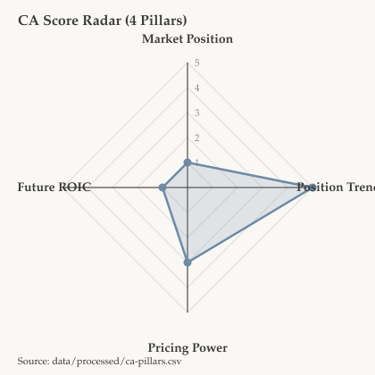
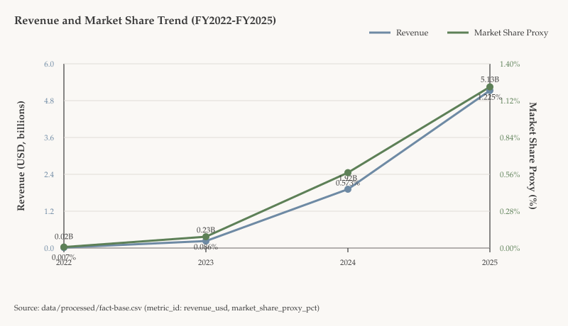
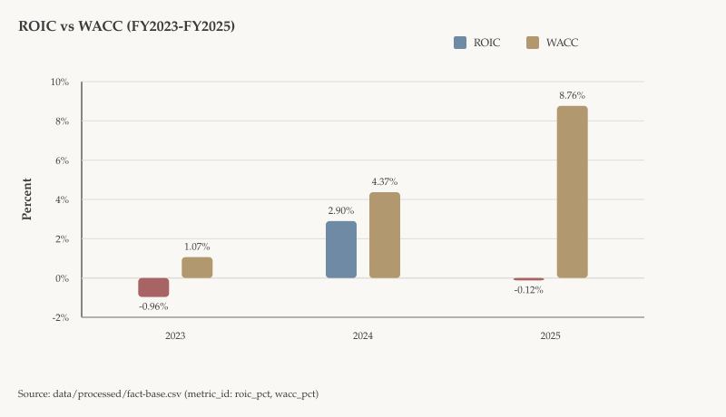
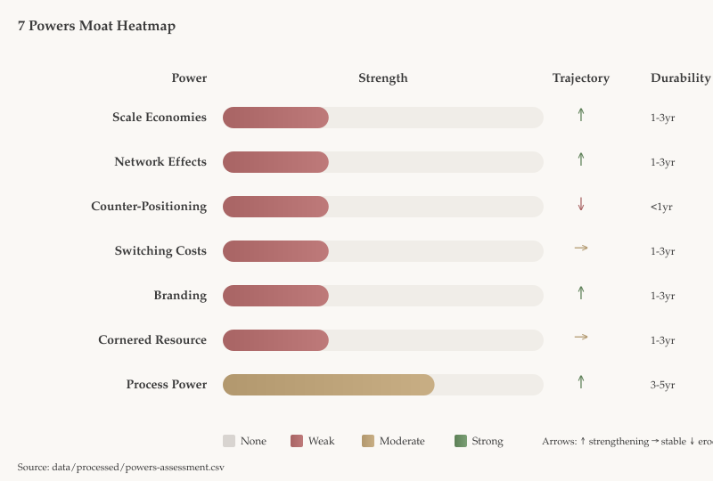
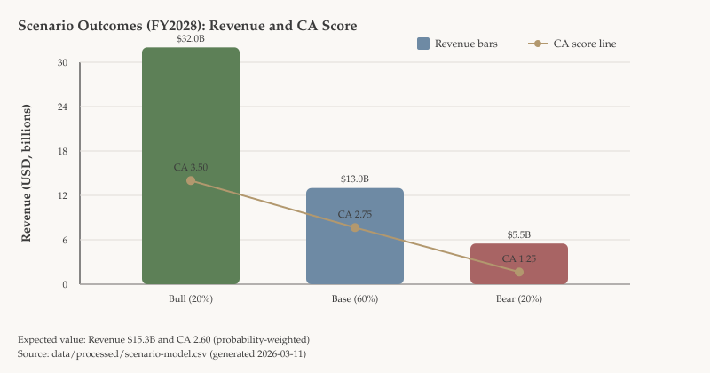

CoreWeave, Inc. | AI Cloud Infrastructure | Market Cap: $39.38B (as of 2026-03-10) | Analysis Date: 2026-03-11
Thesis: CRWV has a narrow moat led by emerging Process Power, but fragile balance-sheet and concentration dynamics keep expected competitive-advantage quality only modestly improving, resulting in a neutral, high-volatility setup at current valuation.
| Pillar | Score | Evidence | Interpretation |
|---|---|---|---|
| Market Position | 1/5 | FY2025 market-share proxy 1.2246% ($5.131B revenue / $419B TAM) | Subscale vs hyperscalers despite relevance in AI workloads. |
| Position Trend | 5/5 | Share proxy rose 0.5732% to 1.2246% YoY (+113.6%) | Strong trajectory and demand capture momentum. |
| Pricing Power | 3/5 | Revenue/COGS proxy CAGR +3.0%; gross margin 71.68% (down from 74.24%) | Neutral pricing evidence; value capture exists but not durable yet. |
| Future ROIC | 1/5 | ROIC -0.12% vs modeled WACC 8.76% (spread -8.88pp) | Capital conversion remains below cost of capital. |



The quantitative profile is mixed: CRWV has strong competitive velocity but still weak absolute moat economics. Market position remains marginal on broad cloud share, while trend strength is exceptional with rapid share gains. Pricing indicators remain intermediate; gross margins are high but pulled back in FY2025, which points to partial pricing control rather than full pass-through power. The key bottleneck is return conversion: ROIC remains below WACC despite scale expansion, so growth has not yet translated into consistent value creation. The near-term implication is that moat quality is still emerging and must be confirmed by sustained ROIC-WACC spread improvement over coming periods.

| Power | Current Strength | Trajectory | Durability | Proxy Signal | Erosion Risk |
|---|---|---|---|---|---|
| Scale Economies | Weak | Strengthening | 1-3 years | 10 to 43 DCs; 70MW to 850+MW | Power/capex bottlenecks and incumbent overbuild can compress leverage. |
| Network Effects | Weak | Strengthening | 1-3 years | RPO $15.1B to $60.7B | Enterprise multi-homing and interoperability standards reduce lock-in. |
| Counter-Positioning | Weak | Eroding | <1 year | AI-first differentiation compressing | Hyperscalers are already replicating AI-first infrastructure and tooling. |
| Switching Costs | Weak | Stable | 1-3 years | ~5-year contracts; deep integrations | Large-customer bargaining power and contractual exit rights limit stickiness. |
| Branding | Weak | Strengthening | 1-3 years | Backlog/RPO trust proxies | Reliability or security incidents can quickly impair emerging brand equity. |
| Cornered Resource | Weak | Stable | 1-3 years | NVIDIA dependence; supplier concentration | No exclusive access; export controls or allocation shifts can constrain supply. |
| Process Power | Moderate | Strengthening | 3-5 years | Execution at scale with >70% gross margin | Talent churn, reliability misses, or peer software catch-up can narrow edge. |
| Metric | Value | Read-through |
|---|---|---|
| Insider ownership | 11.31% | Strong structural alignment |
| 12m net Form 4 flow | -50,265,174 shares | Near-term net insider selling |
| Founder-led management | Yes | Long-horizon governance signal |
| 10b5-1 activity | Yes | Planned monetization disclosed |
| Metric | Value | Threshold | Status |
|---|---|---|---|
| Debt/Equity | 8.42x | <0.3x fortress | Risky |
| Current Ratio | 0.46x | >2.0 fortress | Risky |
| Interest Coverage | -0.04x | >10x fortress | Risky |
| FCF Margin | -141.32% | >20% fortress | Risky |
| Stress liquidity runway | 16.14 months | >18 months target | Below target |
| Axis | Evidence | Implication |
|---|---|---|
| Adjacent TAM | $419B cloud infrastructure TAM (FY2025) | Large external opportunity surface |
| Demand visibility | $66.8B backlog; 13.02x backlog/revenue | Strong embedded forward optionality |
| R&D intensity | 6.86% of revenue (FY2025) | Reinvestment supports future options |
| Platform extensibility | 4 strategic software acquisitions in 2025 | Potential software-layer monetization |
| Geographic runway | International revenue 6.43% | Expansion headroom exists |
| Risk Factor | Severity | Context |
|---|---|---|
| Regulatory | Medium | Multi-jurisdiction AI, privacy, tax, and trade sensitivity |
| Key-person | Medium | Founder centrality despite broader bench |
| Revenue concentration | High | Top customer at 67% of FY2025 revenue |
| Technology disruption | Medium | Fast cycle shifts and roadmap dependency |
| Geopolitical | High | Taiwan and trade-control exposures |
| Supply chain | High | NVIDIA and supplier concentration dependence |

| Scenario | Probability | Revenue | ROIC vs WACC | FY2028 CA | Read-through |
|---|---|---|---|---|---|
| Bull | 20% | $32.0B | 9.0% vs 8.5% | 3.50 | Execution + mix shift unlocks robust profile |
| Base | 60% | $13.0B | 3.0% vs 9.0% | 2.75 | Growth persists but return conversion lags |
| Bear | 20% | $5.5B | -3.0% vs 10.0% | 1.25 | Concentration/supply shock with financing stress |
| Expected value | 100% | $15.3B | 3.0% vs 9.1% | 2.60 | Slight CA improvement, still challenged |
Anti-Fragility Verdict: Fragile
Optionality is strong, but financial resilience and concentration structure currently dominate downside behavior under stress.
single_company with no peer tickers in data/processed/run-config.json. No side-by-side CA ranking is included.CRWV has a narrow moat driven by Process Power, with fragile financial resilience, making the current setup neutral with high volatility and high scenario dispersion.
| Rank | Risk | Probability (24m) | Impact | Early Warning Signals |
|---|---|---|---|---|
| 1 | Customer concentration reset | 40% | Very High | Top customer >60%, RPO deceleration, usage volatility spikes |
| 2 | Financing/liquidity squeeze | 35% | Very High | Runway <12 months, coverage <1x, weaker refinance terms |
| 3 | GPU supply/geopolitical disruption | 30% | High | Cluster-delivery delays, supplier concentration persists, tighter trade controls |
Final Verdict: Neutral
CRWV offers strong upside optionality, but current fragility in leverage, liquidity, and concentration keeps risk-adjusted conviction constrained until return conversion improves.
analysis/ca-score.md,
analysis/moat-analysis.md,
analysis/anti-fragility.md,
analysis/investment-thesis.md,
data/processed/ca-pillars.csv,
data/processed/powers-assessment.csv,
data/processed/anti-fragility-metrics.csv,
data/processed/scenario-model.csv,
data/processed/figure-sources.csv.